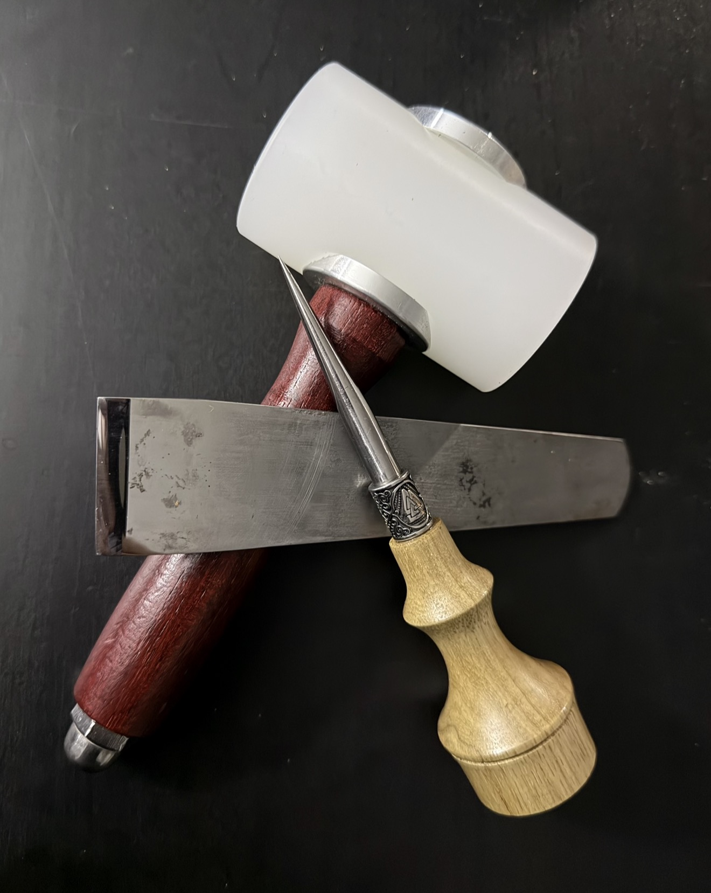

My Story
Iron Barrel and Hide Leather Works was created to showcase handmade leather wallets and build a personal brand focused on craftsmanship and quality. I have been making wallets now for about 3 years and have developed a deep appreciation for the art of leather crafting through working with my hands and the natural beauty of leather.

How the Wallets Are Made
My handmade wallets are created by upcycling old footballs and baseball mitts. The leather is cleaned, cut into wallet parts, and hand-stitched together to create a durable, one-of-a-kind wallet with character and history.Brand Style
The brand style for Iron Barrel and Hide Leather Works is inspired by family history, craftsmanship, and durable materials. The name “Barrel” connects to the Cooper name, which historically referred to barrel makers. The dark onyx and gray colors represent iron, steel tools, and metal hardware used in leatherworking, while the bronze and leather-brown accents reflect the warmth of handmade leather goods. Together, the design gives the brand a strong, rustic, and handcrafted feel.